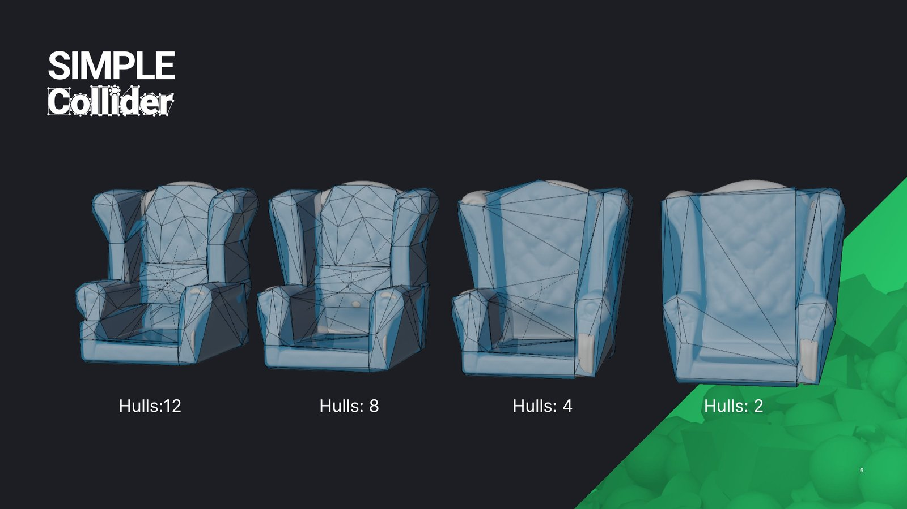
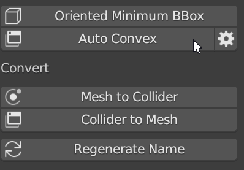
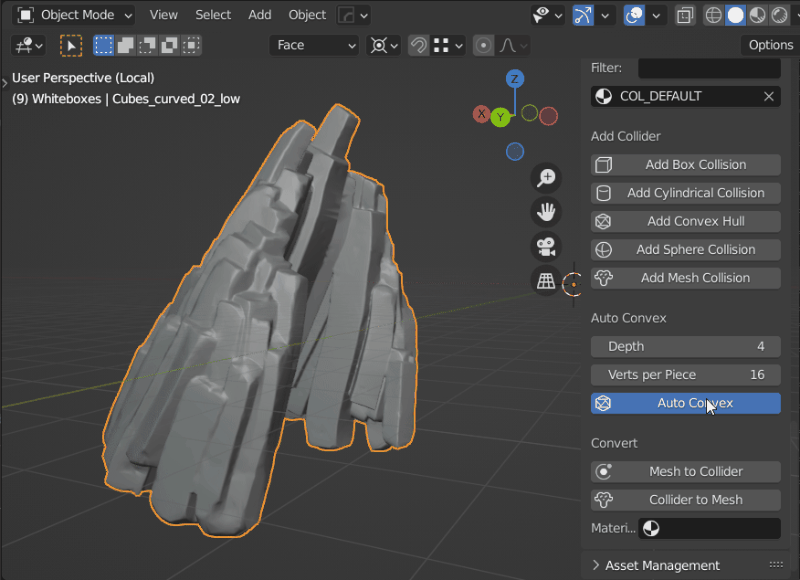
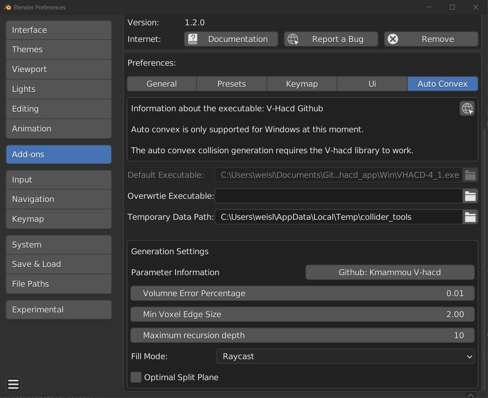
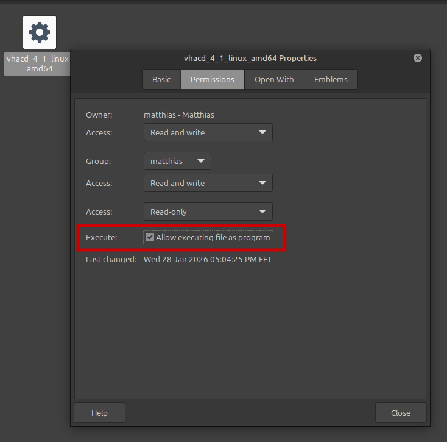
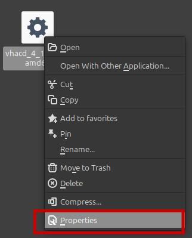

Auto Convex Shape
Auto Convex is a tool for generating convex colliders for complex meshes. It's especially useful for organic shapes like rocks, statues, and debris. While it's not a one-click solution for every asset, it’s a powerful tool for organic models.
Simple Collider ships two Auto Convex backends:
- Auto Convex, powered by V-HACD — the default, fast option.
- Auto Convex (High Precision), powered by CoACD (BETA) — produces noticeably tighter, more accurate hulls by searching for better cuts, at the cost of being significantly slower. Reach for it when V-HACD's result is too coarse for a specific asset, not as a default replacement.
Both backends run asynchronously: generation happens in the background with a live progress overlay (current phase, percentage where available, elapsed time), so Blender's UI stays responsive during a run — Escape cancels it. If a crash or a "Reload Add-on" ever leaves a stuck progress overlay or a job permanently "running," use Clear Stuck Overlays in the addon preferences to reset it.

Basic Parameters
Control the number of convex hulls and their complexity through these settings, which appear in a popup when you activate Auto Convex:
| Parameter | Description | Default | Range |
|---|---|---|---|
| Shrinkwrap | Shrinkwrap output to source mesh | False | False/True |
| Hulls | Maximum number of output convex hulls | 8 | 1-4096 |
| Verts per Piece | Maximum vertices in the output convex hull | 16 | 8-1024 |
| Voxel Resolution | Total number of voxels used | 100,000 | 100,000-10,000,000 |

These parameters are from the original library used: V-HACD on GitHub.

Advanced Parameters
Advanced parameters can be found in the addon preferences under Auto Convex. Access preferences directly by pressing the gear button next to "Auto Convex."

- Overwrite Executable: Specify a custom V-HACD executable path if needed.
- Temporary Data Path: Set a path to store temporary files like meshes and logs used by V-HACD during collider generation.
Additional advanced settings:
| Parameter | Description | Default | Range |
|---|---|---|---|
| Volume Error Percentage | Allowed volume error percentage. Default is 1%. | 0.01 | 0.001-10 |
| Min Voxel Edge Size | Minimum voxel edge size. | 2.0 | 1.0-32.0 |
| Max Recursion Depth | Maximum recursion depth, determining the maximum number of convex hulls (e.g., depth of 12 results in up to 4,096 hulls). | 4 | 2-64 |
| Fill Mode | Method used to find interior voxels for auto convex creation (Raycast, Flood, Surface). | Raycast | Raycast/Flood/Surface |
| Optimal Split Plane | If true, finds the optimal split plane location. Otherwise, splits hulls in the middle. | False | True/False |
These parameters also come from the V-HACD library.
For detailed documentation on the library, refer to the Voxelized Hierarchical Convex Decomposition - V-HACD version 4.
Auto Convex (High Precision) — CoACD (BETA)
Auto Convex (High Precision) uses CoACD instead of V-HACD. It searches for better cut planes via Monte Carlo Tree Search (MCTS), which typically produces fewer, tighter-fitting hulls than V-HACD for the same mesh — at the cost of runtime that can stretch to several minutes on complex, non-manifold meshes. Access it from the same popup/pie menu entries as regular Auto Convex.
Basic parameters, in the popup when you activate it:
| Parameter | Description | Default | Range |
|---|---|---|---|
| Threshold | Concavity threshold for terminating the decomposition. Lower values give finer-grained results with more hulls, higher values give coarser results with fewer hulls | 0.05 | 0.01-1.0 |
| Max Hulls | Maximum number of output convex hulls. -1 for no limit (only takes effect when merge is enabled) | 8 | -1-∞ |
| Limit Hull Vertices | Enable a maximum vertex count constraint per convex hull | On | On/Off |
| Vert per Piece | Maximum number of vertices in each output convex hull (when Limit Hull Vertices is on) | 32 | 4-4096 |
Advanced parameters live in the addon preferences under Auto Convex, alongside the V-HACD settings:
| Parameter | Description | Default | Range |
|---|---|---|---|
| Preprocess Mode | Manifold preprocessing: Auto (only if needed), On, or Off (input mesh must already be 2-manifold) | Auto | Auto/On/Off |
| Preprocess Resolution | Resolution used for the manifold preprocessing step | 50 | 20-100 |
| MCTS Iterations | Number of search iterations in the Monte Carlo Tree Search | 150 | 60-2000 |
| MCTS Max Depth | Maximum search depth in the Monte Carlo Tree Search | 2 | 2-7 |
| MCTS Max Nodes | Maximum number of child nodes in the Monte Carlo Tree Search | 10 | 10-40 |
| Hausdorff Sampling Resolution | Sampling resolution used for the Hausdorff distance calculation | 1000 | 1000-10000 |
| Disable Merge | Disable the merge postprocessing step (merging usually reduces hull count and is recommended) | Off | On/Off |
| PCA Preprocessing | Principal Component Analysis pre-processing, which can improve results for elongated shapes | Off | On/Off |
Lower MCTS/resolution values run faster at some cost to precision; the defaults above are tuned to keep typical runs in roughly the one-to-few-minute range rather than for maximum possible accuracy.
For detailed documentation on the library, refer to the CoACD paper and repository.
Fix Linux Permission
VHACD requires execute permissions to enable Auto Convex collision generation in Blender.
Symptoms of Missing Permissions - A red input field for the Default VHACD Build in Simple Collider preferences. - An info panel warning when attempting to use Auto Convex in your scene.
- Locate the VHACD Executable
- Navigate to: Edit > Preferences > Add-ons > Simple Collider.
- Click "Open Folder" to go directly to the executable (vhacd_4_1_linux_amd64).

- Set Execute Permissions
- Right-click the executable and select Properties.

- Go to the Permissions tab.
- Enable Allow executing file as program.
- Verify the Fix
- The red input field in preferences will disappear.
- Auto Convex collision generation will now work.
Note: This process is specific to Linux Mint and similar distributions. If you encounter further issues, ensure the executable path is correctly referenced in Simple Collider settings.
Fix macOS Permission
VHACD requires execute permissions to enable Auto Convex collision generation in Blender. On macOS, the bundled executable can also lose its execute bit, or get blocked by Gatekeeper since it isn't signed by an identified developer.
Symptoms of Missing Permissions - A red input field for the Default VHACD Build in Simple Collider preferences. - An info panel warning when attempting to use Auto Convex in your scene. - A Gatekeeper alert stating the executable "cannot be opened because the developer cannot be verified" or "is damaged and can't be opened".
- Locate the VHACD Executable
- Navigate to: Blender > Settings > Add-ons > Simple Collider.
-
Click "Open Folder" to go directly to the executable (
vhacd_4_1_macos_arm64). -
Allow the Executable via Finder
- Right-click (or Control-click) the executable and select Open.
- macOS will show a warning that the developer cannot be verified. Click Open in that dialog to allow it.
-
If the executable is still blocked afterward, open System Settings > Privacy & Security, scroll to the Security section, and click Allow Anyway next to the blocked executable message, then repeat this step.
-
Verify the Fix
- The red input field in preferences will disappear.
- Auto Convex collision generation will now work.
If the Finder method doesn't clear the red input field, the execute bit itself may be missing rather than the file just being quarantined. In that case, fix it via Terminal:
- Open Terminal (Applications > Utilities > Terminal).
- Drag the executable from Finder into the Terminal window to paste its full path, or type the path manually.
- Run:
chmod +x /path/to/vhacd_4_1_macos_arm64 xattr -d com.apple.quarantine /path/to/vhacd_4_1_macos_arm64 - The
chmodcommand sets the execute bit. Thexattrcommand removes the quarantine flag macOS applies to downloaded files; if the file was never quarantined, this command will report "No such xattr" which is safe to ignore.